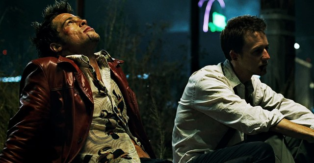

Túmulo dos Vaga-Lumes (1988)
Do mestre Isao Takahata, "Túmulo dos Vaga-Lumes" é um filme de animação que retrata a devastação da guerra através dos olhos de duas crianças. A história se passa no Japão durante a Segunda Guerra Mundial e segue Seita e sua irmã Setsuko enquanto lutam para sobreviver após a perda de sua mãe e a destruição de sua casa.
Com uma narrativa comovente e performances poderosas, o filme aborda temas como redenção, esperança e a busca por conexões humanas em um país marcado por desigualdades sociais.
TrailerClube da Luta (1999)
Do mestre David Fincher, "Clube da Luta" é um filme que explora a crise de identidade e o consumismo na sociedade moderna. A história segue um narrador sem nome que, insatisfeito com sua vida, se envolve em um clube secreto de luta como uma forma de encontrar significado e conexão em um mundo superficial.
Com uma narrativa não linear e repleta de reviravoltas, o filme se tornou um clássico cult, abordando temas como masculinidade, alienação e a busca por propósito em um mundo dominado pelo materialismo.
Trailer10 Coisas Que eu Odeio em Você (1999)
Do mestre Gil Junger, "10 Coisas Que Eu Odeio em Você" é uma comédia romântica que reimagina a peça "A Megera Domada", de Shakespeare, no contexto moderno de um colégio. A história gira em torno de dois irmãos, Kat e Bianca, e dos desafios que enfrentam em suas vidas amorosas.
Com diálogos afiados, personagens cativantes e uma trilha sonora memorável, o filme se tornou um clássico do gênero, explorando temas como amor, identidade e a luta pela independência em meio às pressões sociais.
TrailerA Central do Brasil (1998)
Do mestre Walter Carvalho, "A Central do Brasil" é um drama que conta a história de Dora, uma ex-professora que trabalha escrevendo cartas para analfabetos na estação central do Brasil. Após a morte de um de seus clientes, ela se vê responsável por levar o filho dele, Josué, até o pai que nunca conheceu.
Com uma narrativa comovente e performances poderosas, o filme aborda temas como redenção, esperança e a busca por conexões humanas em um país marcado por desigualdades sociais.
TrailerInterestelar (2014)
Do mestre Christopher Nolan, "Interestelar" é uma épica jornada através do espaço e do tempo, explorando temas de amor, sacrifício e a sobrevivência da humanidade. A história segue um grupo de exploradores que viajam através de um buraco de minhoca em busca de um novo lar para a humanidade, enquanto enfrentam desafios inimagináveis e dilemas morais.
Com visuais deslumbrantes e uma trilha sonora emocionante de Hans Zimmer, o filme se tornou um marco na ficção científica moderna, convidando o público a refletir sobre o nosso lugar no universo e o que significa ser humano.
TrailerCidade de Deus (2002)

Do mestre Fernando Meirelles, "Cidade de Deus" é um poderoso drama que retrata a vida nas favelas do Rio de Janeiro, seguindo a trajetória de um jovem fotógrafo que busca escapar da violência e da criminalidade que o cercam. O filme é uma adaptação do livro homônimo de Paulo Lins e oferece um olhar cru e realista sobre a desigualdade social e a luta pela sobrevivência em um ambiente hostil.
Com uma narrativa envolvente e atuações impactantes, "Cidade de Deus" se tornou um marco do cinema brasileiro, recebendo aclamação internacional e várias indicações ao Oscar.
Trailer{kind=link}
/i.s3.glbimg.com/v1/AUTH_59edd422c0c84a879bd37670ae4f538a/internal_photos/bs/2024/E/s/2HZsAyRFKWqQxY9voR5A/cidade-de-deus-1.jpg){kind=link}
{kind=link}